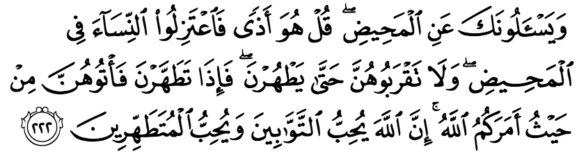
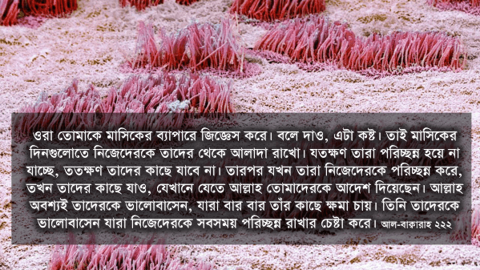
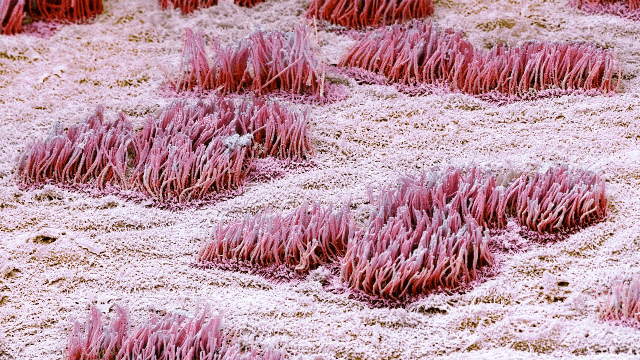

ওরা তোমাকে মাসিকের ব্যাপারে জিজ্ঞেস করে। বলে দাও, এটা কষ্ট। তাই মাসিকের দিনগুলোতে নিজেদেরকে তাদের থেকে আলাদা রাখো। যতক্ষণ তারা পরিচ্ছন্ন হয়ে না যাচ্ছে, ততক্ষণ তাদের কাছে যাবে না। তারপর যখন তারা নিজেদেরকে পরিচ্ছন্ন করে, তখন তাদের কাছে যাও, যেখানে যেতে আল্লাহ তোমাদেরকে আদেশ দিয়েছেন। আল্লাহ অবশ্যই তাদেরকে ভালোবাসেন, যারা বার বার তাঁর কাছে ক্ষমা চায়। তিনি তাদেরকে ভালোবাসেন যারা নিজেদেরকে সবসময় পরিচ্ছন্ন রাখার চেষ্টা করে। [আল-বাক্বারাহ ২২২]
অন্য ধর্মের মানুষদের মধ্যে মাসিকের ব্যাপারে নানা ধরনের কুসংস্কার এবং নোংরা সব ধারণা ছিল এবং এখনো আছে। নারীদেরকে এই সময়টাতে এক ঘরে করে রাখা হতো। তাদের সাথে এক বিছানায় কেউ শুতে চাইত না। তাদের সাথে একসাথে বসে খাবার পর্যন্ত খেত না, আলাদা করে খেতে বসতে দেওয়া হতো। নারীদেরকে রান্না ঘরে রান্না করতে দেওয়া হতো না, কারণ তাদের রান্না করা খাবার খেলে মানুষ অসুস্থ হয়ে পড়বে। এধরনের নানা রকমের অন্যায় থেকে শুরু করে এই সময়টাতে নারীদের সাথে নানা ধরনের নোংরা কাজও করা হতো।[১২] দুঃখের ব্যাপার হলো এই কষ্টের সময়টাতে পুরুষরা নারীদের সাথে অন্যায় তো করতোই, এমনকি পরিবারের অন্য নারীরাও মাসিকে থাকা মেয়েদের সাথে দুর্ব্যবহার করতো।
ইসলাম মাসিক সম্পর্কে যাবতীয় ভুল ধারণা অবসান করেছে, নারীদের সাথে অন্যায় করা বন্ধ করেছে, নারীদের এই স্বাভাবিক প্রাকৃতিক ব্যাপারটাকে মানুষের কাছে গ্রহণযোগ্য করেছে। যেই সব নারীবাদীরা অপপ্রচার করে বেড়ায় যে, ইসলাম নারীদেরকে হেয় করে, তারা ইতিহাস পড়ে দেখুক ইসলাম আসার আগে নারীদের জীবন কী ভয়ঙ্কর কষ্টের এবং অপমানের ছিল। ইসলাম আসার আগে প্রত্যেক মাসে এক সপ্তাহ নারীরা যে পরিমাণের অন্যায়, দুর্ব্যবহার এবং অপমান সহ্য করতো, আর ইসলাম আসার পরে নারীদের অবস্থা কীভাবে আমূল বদলে গেল, সেটাই নারীবাদীদের চোখ খুলে দেওয়ার জন্য যথেষ্ট। দুঃখজনকভাবে উপমহাদেশের মুসলিমরা হিন্দু ধর্ম দিয়ে ব্যাপকভাবে প্রভাবিত। হিন্দুদের নানা কুসংস্কার, অশুচির ধারণা মুসলিমদের মধ্যেও ঢুকে গেছে। যার ফলে মাসিক সম্পর্কে ইসলাম যা শিখিয়েছে, সেটা মুসলিমরা হিন্দুদের সংস্কৃতি, বিশ্বাস, কুসংস্কার দিয়ে গুলিয়ে ফেলেছে। এখনো গ্রামে-গঞ্জে এই সময়টাতে নারীদের সাথে ব্যাপক অন্যায় আচরণ হতে দেখা যায়।
আল্লাহ تعالى মানুষকে সর্বশ্রেষ্ঠ ডিজাইনে তৈরি করেছেন। মাসিক আল্লাহর تعالى সর্বশ্রেষ্ঠ ডিজাইনের একটি অংশ। মাসিকের ব্যাপারটাকে খারাপভাবে দেখার সময় আমাদেরকে চিন্তা করতে হবে: আমরা কি আল্লাহর تعالى সর্বশ্রেষ্ঠ ডিজাইনকে খারাপভাবে দেখছি? আমরা কি আল্লাহর تعالى ডিজাইনের কোনো একটি ব্যাপারকে ঘৃণা করছি? আল্লাহ تعالى কু’রআনে গর্ব করে বলেছেন যে, তিনি মানুষকে সবচেয়ে সুন্দর গঠনে সৃষ্টি করেছেন [সূরা আত-ত্বিন ৯৫:৪]। আমরা কি তাহলে মানুষের গঠনের কোনো একটি দিকের প্রয়োজনীয়তা নিয়ে প্রশ্ন করার মতো ধৃষ্টতা দেখাচ্ছি?

মাসিক কেন হয়?
অনেকে প্রশ্ন করেন, আল্লাহ تعالى কেন মেয়েদের মাসিকের মতো একটা কষ্ট দিলেন? এত রক্ত নষ্ট হয়ে কী লাভ? প্রত্যেক মাসে স্বামীদের ৭-১০ দিন কষ্ট করতে হবে, কী দরকার ছিল এসবের?
জরায়ুর ভেতরের দেওয়ালে একটি স্তর থাকে যেখানে ভ্রূণ গিয়ে সংযুক্ত হয়। যখন এই স্তরটি খসে পড়ে, তখন কিছু রক্ত সহ তা বেড়িয়ে যায় —এটাই মাসিক। এই জটিল স্তরটি সুস্থ, সবল ভ্রূণকে গ্রহণ করে, এবং বিকৃত ভ্রূণকে মাসিকের মাধ্যমে বের করে দিয়ে অসুস্থ, বিকৃত বাচ্চা হওয়া থেকে আমাদের রক্ষা করে।[৩৬০] আল্লাহ تعالى এই স্তরে যথেষ্ট ব্যবস্থা করে রেখেছেন, যেন এটি ভ্রূণের স্বাস্থ্য যাচাই করে সিদ্ধান্ত নিতে পারে: সেটাকে রাখবে, নাকি বের করে দেওয়া ভালো হবে।

জরায়ুর ভেতরের স্তর, যা মাসিকের মাধ্যমে বেড়িয়ে যায়।
অপরিপক্ব, নষ্ট বা মৃত ভ্রূণ, যা জরায়ু গ্রহণ করে না, ভেতরে থেকে গেলে সেটা থেকে ইনফেকশন হয়ে যায়। এছাড়াও সেই ভ্রূণ থেকে ক্ষতিকর হরমোন তৈরি হয়। একারণে জরায়ুকে রক্ষা করার জন্য মাসিকের মাধ্যমে ভেতরটা পরিস্কার করে নারীদের দেহ থেকে ক্ষতিকর হরমোন, উচ্ছিষ্ট বের করে দিয়ে নতুন পরিষ্কার স্তর তৈরি হয়। এই পদ্ধতি নিশ্চিত করে মেয়েরা যেন সুস্থ থাকে, সুস্থ বাচ্চা ধারন করার জন্য জরায়ু সুষ্ঠু থাকে এবং মানবজাতির বংশবৃদ্ধিতে জেনেটিক ত্রুটি বাড়তে না থাকে। মাসিক আছে দেখেই মানবজাতির জেনেটিক ত্রুটি বংশ পরম্পরায় ক্রমাগত বাড়তে বাড়তে মানুষ বিকৃত হয়ে যায়নি।[৩৬১]
এই জটিল স্তরটিতে প্রচুর রক্তনালী থাকে, যা রক্ত প্রবাহিত করে স্তরটিকে ভ্রূণের জন্য উপযুক্ত রাখে। এই স্তরটি মাসের পর মাস রক্ষণাবেক্ষণ করা শরীরের জন্য যথেষ্ট ব্যয়বহুল একটি কাজ। এর জন্য প্রচুর রক্ত এবং পুষ্টি দরকার হয়। চার মাসে মাসিক হওয়ার কারণে দেহ ৫৩ মিলিওন জুলস শক্তি সাশ্রয় করে, যা পুরো ছয় দিনের খাবার থেকে আসা শক্তির সমান। স্বাভাবিক মাসিকের সময় গড়ে যে ৩০-৭০ মিলি রক্ত বেড়িয়ে যায়, তাতে দেহের কিছুই যায় আসে না।[৩৫৯]
একারণে সাধারণত মাসে একবার জরায়ু পুরনো স্তরটি ফেলে দিয়ে নতুন একটি স্তর তৈরি করে, কারণ সেটি করলে দেহের পুষ্টি এবং শক্তি অনেক খরচ কম হয়। এছাড়া পরিষ্কার একটি নতুন স্তরের লাভ তো আছেই। মাঝে মাঝে জরায়ু সিদ্ধান্ত নেয় যে, এই স্তরটি বের করে দেওয়ার দরকার নেই, তারচেয়ে শরীরে শুষে নেওয়াটাই ভালো হবে। তখন আর কিছু বের হয় না, স্তরটি তখন শরীরে শুষে যায়। সুতরাং হঠাৎ এক-দুই মাস মাসিক না হলে চিন্তার কারণ নেই। ঠিকমতো খাওয়া দাওয়া করে দেহকে স্বাভাবিকভাবে তার কাজ করতে সাহায্য করা উচিত। মাসিক জনিত সমস্যার অন্যতম কারণ হচ্ছে দেহকে ঠিকমতো পুষ্টি না দিয়ে তার স্বাভাবিক কাজে বাঁধা দেওয়া। মিডিয়ার ব্যাপক অপপ্রচারনায় নারীদের যে ধরনের চিকন দেহের গঠন ধরে রাখার জন্য উৎসাহ দেওয়া হয়, সেটা সম্পূর্ণ প্রকৃতি বিরুদ্ধ কাজ। নারী দেহ এই অত্যাচার সহ্য করার জন্য তৈরি করা হয়নি। এজন্যই আজকাল নারীদের এত ব্যাপক হারে মাসিক জনিত সমস্যা দেখা যায়।[৩৫৯] সেই সমস্যা কমাতে গিয়ে অনেকে পিল খায়। তারপর সারা জীবন পিল জনিত অনেকগুলো সমস্যায় ভোগে।
মাসিক শুধু মানুষেরই হয় না, বানর, শিম্পাঞ্জি, গরিলা, বাদুর সহ আরও কিছু প্রাণীর মাসিক হয়। যে সব প্রাণী লম্বা সময় গর্ভবতী থেকে বাচ্চা জন্ম দেয়, এবং সারা জীবনে অল্প কয়েকটি বাচ্চা জন্ম দেয়, সেই সব প্রাণীর মাসিক হতে দেখা যায়। কারণ মাসিক হচ্ছে সুস্থ সবল বাচ্চা শেষ পর্যন্ত সুন্দরভাবে জন্ম দেওয়ার সম্ভাবনা যতটুকু সম্ভব বাড়ানোর জন্য দেহের প্রতিরক্ষা ব্যবস্থা। যদি মাসিক না হতো, তাহলে বিকৃত বাচ্চা এবং মৃত বাচ্চা হতো অনেক বেশি।[৩৬২]
বলে দাও, এটা কষ্ট
প্রচলিত অনুবাদ হলো, “বলে দাও, এটা অশুচি।” কিন্তু এখানে نَجَس নাজাস অর্থাৎ অপবিত্রতা, অশুচি, নোংরা ব্যবহার করা হয়নি। বরং বলা হয়েছে, “বলে দাও, এটা أَذى”أَذًى (আযা) এর কু’রআনে ব্যবহার করা অর্থগুলো হচ্ছে অসুস্থতা, ক্ষত, কষ্টকর অবস্থা, অসুবিধা ইত্যাদি।[৫] অনেকে এর ব্যখ্যা করেছেন অপবিত্রতা।[১২] কিন্তু কু’রআনে এই শব্দটি ব্যবহার হয়েছে পুরুষদের মাথার ত্বকের ক্ষত বোঝাতে, যা তাদেরকে হাজ্জের সময় মাথা কামাতে অসুবিধা তৈরি করে [২:১৯৬]। মুসলিমদের উপর আহলে কিতাব এবং মুশরিকদের কষ্টকর আচরণ বোঝাতে [৩:১৮৬]। মুসলিমদের কষ্ট দেওয়া, ছোট খাটো ক্ষতি করা বোঝাতে [৩:১১১]। ভারি বৃষ্টির কারণে যে কষ্টকর পরিস্থিতি তৈরি হয়, সেটা বোঝাতে [৪:১০২]। এবং মাসিক সংক্রান্ত এই আয়াতে। কু’রআনে এই শব্দের অর্থগুলো লক্ষ করলে দেখা যায়, أَذى শব্দটি ক্ষতিকর কিছু, কষ্টকর কিছু বোঝাতেই সব জায়গায় ব্যবহার করা হয়েছে।
এছাড়াও আরেকটি লক্ষ করার ব্যপার হলো, এই আয়াতে হওয়ার কথা مُؤْذٍ মু’যিন, যার অর্থ কষ্টকর কিছু। কিন্তু আমরা أَذى এর মাসদার রূপ দেখতে পাই, যার অর্থ হচ্ছে মাসিক হচ্ছে ‘কষ্ট’ যাকে বলে। কষ্ট কী জিনিস সেটা মাসিক হলে বুঝবে।[১] আল্লাহ تعالى পুরুষদেরকে জানিয়ে দিচ্ছেন যে, তাঁর দৃষ্টিতেও এটা ‘ভীষণ কষ্ট’। তাই পুরুষরা যেন একে হাল্কাভাবে না নেয়।
একই সাথে নারীদেরও এটা বুঝতে হবে যে, মাসিক শুধু নারীদের জন্য কষ্ট না, পুরুষদের জন্য একটা যথেষ্ট মানসিক কষ্ট। এই সময়টাতে পুরুষদের বিশেষভাবে মানিয়ে চলতে হয়, পুরুষদেরকে যথেষ্ট সংযম পালন করতে হয়। এছাড়া পুরুষদের শারীরিক কষ্ট তো আছেই। মনে রাখতে হবে, নারী-পুরুষ দুইজনের এই কষ্ট হচ্ছে তাদের ভবিষ্যৎ বংশধরদের নিরাপত্তার জন্য একটা বিনিয়োগ। প্রত্যেক বাবা-মাই চাইবেন তাদের বাচ্চারা যেন সুস্থ সবল হয়, ত্রুটি বিহীন হয়। এর জন্য তারা যে কোনো ত্যাগ স্বীকার করতে রাজি থাকবেন। মাসিক হচ্ছে সেই ত্যাগের একটি অংশ।
তাই মাসিকের সময় নিজেদেরকে তাদের থেকে আলাদা রাখো
আল্লাহ تعالى বলছেন যে, এই সময়টাতে যেন পুরুষরা নিজেদেরকে নারীদের থেকে আলাদা রাখে। اعتزلوا অর্থ নিজেদেরকে কোনো কিছু থেকে দূরে রাখা। স্ত্রীদেরকে আলাদা করে দেওয়া নয়। পুরুষদের দূরে থাকার নির্দেশ দেওয়া হয়েছে, স্ত্রীদের দূর করে দেওয়ার নির্দেশ দেওয়া হয়নি। এখন অনেকে এই আয়াতের অর্থ শাব্দিক ভাবে নিয়ে মাসিকের সময় স্ত্রীদের থেকে একশ হাত দূরে থাকা শুরু করেন। কিন্তু আমরা জানি কু’রআনে আল্লাহ تعالى কখনোই যৌনতাকে সরাসরি ভাষায় প্রকাশ করেন না। তিনি যাবতীয় যৌনতা সম্পর্কিত আয়াতগুলোতে খুবই মার্জিত ভাষা ব্যবহার করে ইঙ্গিতে জানিয়ে দেন তাঁর আদেশগুলো। যদিও অনুবাদগুলোতে আমরা সরাসরি অশ্লীল শব্দের ব্যবহার দেখতে পাই। কিন্তু মূল আরবিতে কোনো ধরনের অশ্লীল শব্দ নেই। যেমন, মাসিক শেষ হলে পুরুষরা কী করতে পারবে, সেটা আল্লাহ تعالى ইঙ্গিতে বুঝিয়েছেন—
যখন তারা নিজেদেরকে পরিচ্ছন্ন করে, তখন তাদের কাছে যাও, যেখানে যেতে আল্লাহ তোমাদেরকে আদেশ দিয়েছেন।
যারা আয়াতের আগের অংশটির শাব্দিকভাবে অর্থ করে মাসিকের সময় স্ত্রীদের থেকে একেবারে দূরে থাকেন, তাদের এই অংশেরও শাব্দিক অর্থ করা উচিত। এই অংশের শাব্দিক অর্থ করলে তখন তাদেরকে স্ত্রীদের আশেপাশে ঘুরতে হবে, অন্য কিছু করতে পারবে না। কিন্তু তারা আয়াতের এই অংশের শাব্দিক অর্থ করেন না। কারণ করলে সেটা তাদের জন্য বড়ই কষ্টের ব্যাপার হবে।
আরবি শব্দের ভাণ্ডার বিশাল, বাংলার থেকে অনেক বেশি। এতে এমন সব অশ্লীল শব্দ আছে, যা ব্যবহার করে অত্যন্ত স্পষ্টভাবে ভয়াবহ সব বর্ণনা দেওয়া যেত: কী করা যাবে এবং কী করা যাবে না। কিন্তু আল্লাহ تعالى কু’রআনে কোথাও সামান্যতম অশ্লীল শব্দ ব্যবহার করেননি। বরং তিনি সবসময় অত্যন্ত শালীনতা বজায় রেখে ইঙ্গিতে বুঝিয়েছেন। যাদের বোঝার তারা ঠিকই বুঝবে। যাদের বোঝার বয়স হয়নি, তারা পড়ে অশ্লীল কিছু কল্পনা করবে না। সাত-আট বছরের বাচ্চা কু’রআন মুখস্ত করার সময় যেন এই সব আয়াত পড়ে আঁতকে না উঠে, বাবা-মাকে প্রশ্ন করলে বাবা-মা যেন কঠিন পরিস্থিতিতে না পড়েন, সে জন্য আল্লাহ تعالى এমন সব শব্দ ব্যবহার করেছেন যে, সহজেই একটি বাচ্চাকে কিছু একটা বলে চুপ করিয়ে দেওয়া যায়। বরং যতসব রগরগে বর্ণনা পাবেন বাইবেল, ঋগ্বেদ-এ। সেই গ্রন্থগুলো পুরোমাত্রায় পর্ণ। সেগুলো যে পুরুষদের উর্বর কল্পনার ফসল, তা যৌনতা সম্পর্কিত অধ্যায়গুলো পড়লেই বোঝা যায়।
একাধিক হাদিসে আমরা দেখতে পাই, মাসিকের সময়টাতে পুরুষদের শুধুমাত্র একটি বিশেষ কাজ করতে মানা করা হয়েছে। এছাড়া স্ত্রীদের সাথে শোয়া, ঘুমানো, একসাথে খাওয়া, আলিঙ্গন করা, অন্তরঙ্গ হওয়াতে কোনো বাঁধা নেই। বিভিন্ন তাফসীরে বিস্তারিত বর্ণনা রয়েছে এসময় কী করা যাবে, আর কী করা যাবে না।[১২][১৪][৪]
যতক্ষণ তারা পরিচ্ছন্ন হয়ে না যাচ্ছে, ততক্ষণ তাদের কাছে যাবে না। তারপর যখন তারা নিজেদেরকে পরিচ্ছন্ন করে, তখন…
এই আয়াতের ভাষা অত্যন্ত সূক্ষ্ম। প্রথমে আল্লাহ تعالى বলছেন, ‘যতক্ষণ তারা পরিচ্ছন্ন হয়ে না যাচ্ছে।’ يَطْهُرْنَ এসেছে طَهُرَ থেকে, যার অর্থ পরিচ্ছন্ন হয়ে যাওয়া। নিজের চেষ্টায় পরিচ্ছন্ন হওয়া নয়। অর্থাৎ দেহে মাসিকের প্রক্রিয়া বন্ধ হওয়া।
এরপর তিনি تعالى বলছেন, ‘তারপর যখন তারা নিজেদেরকে পরিচ্ছন্ন করে’ — এখানে تَطَهَّرْنَএসেছে تَطَهَّرَ থেকে, যার অর্থ খুব ভালভাবে পরিষ্কার করা, অর্থাৎ গোসল করে ভালো করে বার বার পরিষ্কার করা।
সুতরাং এই দুই আদেশ অনুসারে মাসিক বন্ধ হওয়া হচ্ছে পূর্বশর্ত। মাসিক চলাকালে গোসল করে হাজার পরিষ্কার করলেও হবে না। আবার শুধু মাসিক বন্ধ হলেই হবে না, এরপর নিজেকে পরিষ্কার করতে হবে। সেটাও সাধারণ পরিষ্কার হলে হবে না, تَطَهَّرَ খুব ভালো করে পরিষ্কার করতে হবে।[৭]
এখন প্রশ্ন আসে, কেন মাসিকের সময় এই নিষেধ? মাসিকের সময় কেন পুরুষদের দূরে থাকতে হবে?
মাসিকের সময় গেলে সমস্যা কী?
দেহ যখন কোনো কিছু বের করে দেয়, সেটা দেহের জন্য ভালো না দেখেই বের করে দেয়। বমি হলে আমরা কখনো সেটা ধাক্কা দিয়ে আবার মুখের ভেতর ঢুকিয়ে গিলে ফেলি না। দেহ বমি করে কোনো কিছু যদি বের করে দেওয়ার সিদ্ধান্ত নেয়, তারমানে সেটা দেহের জন্য খারাপ। মানব দেহের ডিজাইনের সাথে অন্য কিছুর কোনো তুলনা হয় না। একইভাবে মলের বেলায়ও একই কথা প্রযোজ্য। আমরা নিশ্চয়ই এমন কিছু করবো না, যে কিছু মল আবার দেহের ভেতরে ঢুকে যাবে। করলে সেটা খুবই বিকৃত কাজ হবে। এধরনের চরম বিকৃত কাজ সমকামীরা করে, এবং পর্ণ দেখে বিকৃত হয়ে যাওয়া মানসিকতার মানুষরা করে। এটা মোটেও স্বাভাবিক প্রাকৃতিক কাজ নয়।
মাসিকের সময় দেহ যা বের করে দিতে যাচ্ছে, সেটা আবার ধাক্কা দিয়ে দেহের ভেতরে ঢুকিয়ে দেওয়াটা যে ক্ষতিকর, এনিয়ে প্রচুর গবেষণা হয়েছে। গবেষণায় দেখে গেছে এর ফলে HIV এবং STD (যৌনতা জনিত অসুখ) হওয়ার সম্ভাবনা বহুগুণে বেড়ে যায়।[৩৬৩] Bacterial vaginosis (BV) হচ্ছে এক ধরনের অসুখ যখন প্রচুর পরিমাণে ব্যাকটেরিয়ার কলোনি তৈরি হয়ে মাছের আঁশের মতো দুর্গন্ধ হয়, সাদা স্রাব বের হয়। এটা পুরুষদের জন্য অত্যন্ত ঝুঁকিপূর্ণ। মাসিকের প্রথম ৭ দিনে এটা হওয়ার সম্ভাবনা অনেক বেশি থাকে। এই সময় পুরুষদের অবশ্যই দূরে থাকা উচিত, না হলে জটিল ইনফেকশনে ভোগার সম্ভাবনা আছে।[৩৬৪] Staphylococcus aureus নামের এক জটিল ইনফেকশন হওয়ার সাথে মাসিকের সরাসরি যোগাযোগের যথেষ্ট পরিসংখ্যান পাওয়া গেছে। এটা থেকে জটিল ধরনের রক্তের ইনফেকশন হয়। একারণে মাসিকের সময় নারীদের ভালো করে পরিষ্কার থাকাটা, এবং পরিষ্কার কাপড় ব্যবহার করাটা খুবই জরুরি।[৩৬৫]
আশাকরি কারো বুঝতে সমস্যা হওয়ার কথা নয় কেন এসময়টাতে পুরুষদের দূরে থাকার জন্য আল্লাহ تعالى সাবধান করেছেন। দুঃখজনকভাবে আজকাল টিভিতে বিভিন্ন স্যানিটারি প্যাডের বিজ্ঞাপনে দূরে থাকার বদলে উলটো আরও কাছে যাওয়ার জন্য উৎসাহিত করা হয়। আর ইন্টারনেটে অশ্লীল সাইটগুলোতে উস্কে দেওয়ার জন্য হাজারো চেষ্টা তো আছেই। পাশ্চাত্যের এই সব বিকৃত প্রচারণায় পড়ে সারা পৃথিবীর মানুষ বিভ্রান্ত হচ্ছে। সঠিক গবেষণাগুলো পড়লে আশাকরি তাদের চোখ খুলে যাবে।
আল্লাহ অবশ্যই তাদেরকে ভালোবাসেন, যারা বার বার তাঁর কাছে ক্ষমা চায়
এখানে হঠাৎ ক্ষমা চাওয়ার কথা আসলো কেন? একে তো নারীরা মাসিকের ঝামেলা সহ্য করছে, অন্যদিকে পুরুষরা দিনের পর দিন সংযম করছে। তাহলে তারা আবার ক্ষমা চাইতে যাবে কেন?
এই সময়টাতে মানুষ বহু অন্যায় করে। পুরুষরা সবাই সাধু না। তারা স্ত্রীদের না পেলে গোপনে কী কী করে সেটার তালিকা না হয় না-ই দিলাম। অনেক স্ত্রী চিন্তাও করতে পারবে না যে, তার পাঁচ-ওয়াক্ত নামাজ পড়া, দাঁড়ি রাখা, টাকনুর উপরে প্যান্ট পড়া, আলহাজ্ব জামাই গোপনে কত কুকীর্তি করে। একারণেই আল্লাহ تعالى ইঙ্গিতে বলেছেন যে, তিনি দেখেন আমরা এই সময় কত অন্যায় করি। তিনি تعالى আমাদের এখনো ক্ষমা করে দিতে রাজি আছেন। আমরা যেন তাঁর تعالى কাছে বার বার ক্ষমা চাই। তাওবাহ করি, পাপের পথ থেকে ফিরে আসি।
আর নারীরাও ফুলের মতো পবিত্র নন। তারাও যেন ভুলে না যায় যে, তাদেরও বার বার ক্ষমা চাওয়া উচিত। তারা মাসিকের সময় হরমোনের ভারসাম্যহীনতার প্রভাব ছাড়াও কত ধরনের অন্যায় করেন সেটা না বলাই ভালো। যাদের ভেতরে এখনো সততা আছে, আয়নার দাঁড়িয়ে নিজেকে প্রশ্ন করুন: নিজের এবং অন্যের উপরে মাসিকের কারণে এই পর্যন্ত কত অন্যায় করেছেন। আল্লাহর تعالى কাছে তাওবাহ করুন। তিনি تعالى তাওবাহ বার বার গ্রহণ করেন।
তিনি তাদেরকে ভালোবাসেন যারা নিজেদেরকে সবসময় পরিচ্ছন্ন রাখার চেষ্টা করে।
আল্লাহ تعالى বলছেন, যারা مُتَطَهِّرون তাদেরকে আল্লাহ تعالى ভালোবাসেন। মুতাহহিরুন হচ্ছে যারা নিজেদেরকে পবিত্র রাখার জন্য সবসময় আন্তরিকভাবে চেষ্টা করে। এরা ওযু ছুটে গেলে, একদম শেষ সময় পর্যন্ত অপেক্ষা করে না। যত জলদি পারে পবিত্র হয়ে নেয়। এরা শরীরে নাপাকি লাগলে সেটাকে ভ্রুক্ষেপ না করে ঘুরে বেড়ায় না। জলদি গিয়ে পরিষ্কার করে নেয়। সেটা মানুষের সামনে লজ্জায় মাথা কেটে গেলেও করে। মুতাহহিরুনদের “আমার এখন প্যান্ট নষ্ট, পরে নামাজ পড়বো” —এই ধরনের কথা বলার প্রশ্নই আসে না। এরা সব সময় পরিষ্কার, পরিচ্ছন্ন, পবিত্র মানুষ। আল্লাহ تعالى এদেরকে অনেক ভালোবাসেন।
সূত্র
- [১] বাইয়িনাহ এর কু’রআনের তাফসীর।
- [২] ম্যাসেজ অফ দা কু’রআন — মুহাম্মাদ আসাদ।
- [৩] তাফহিমুল কু’রআন — মাওলানা মাওদুদি।
- [৪] মা’রিফুল কু’রআন — মুফতি শাফি উসমানী।
- [৫] মুহাম্মাদ মোহার আলি — A Word for Word Meaning of The Quran
- [৬] সৈয়দ কুতব — In the Shade of the Quran
- [৭] তাদাব্বুরে কু’রআন – আমিন আহসান ইসলাহি।
- [৮] তাফসিরে তাওযীহুল কু’রআন — মুফতি তাক্বি উসমানী।
- [৯] বায়ান আল কু’রআন — ড: ইসরার আহমেদ।
- [১০] তাফসীর উল কু’রআন — মাওলানা আব্দুল মাজিদ দারিয়াবাদি
- [১১] কু’রআন তাফসীর — আব্দুর রাহিম আস-সারানবি
- [১২] আত-তাবারি-এর তাফসীরের অনুবাদ।
- [১৩] তাফসির ইবন আব্বাস।
- [১৪] তাফসির আল কুরতুবি।
- [১৫] তাফসির আল জালালাইন।
- [১৬] লুঘাতুল কুরআন — গুলাম আহমেদ পারভেজ।
- [১৭] তাফসীর আহসানুল বায়ান — ইসলামিক সেন্টার, আল-মাজমাআহ, সউদি আরব
- [১৮] কু’রআনুল কারীম – বাংলা অনুবাদ ও সংক্ষিপ্ত তাফসীর — বাদশাহ ফাহাদ কু’রআন মুদ্রণ কমপ্লেক্স
- [৩৫৯] Strassmann, B. I. (1996). The evolution of endometrial cycles and menstruation. Quarterly Review of Biology, 181-220.
- [৩৬০] Teklenburg, G., Salker, M., Molokhia, M., Lavery, S., Trew, G., Aojanepong, T., Mardon, H. J., Lokugamage, A. U., Rai, R., Landles, C., Roelen, B. A. J., Quenby, S., Kuijk, E. W., Kavelaars, A., Heijnen, C. J., Regan, L., Brosens, J. J. and Macklon, N. S.
- Teklenburg, G., Salker, M., Molokhia, M., Lavery, S., Trew, G., & Aojanepong, T. et al. (2010). Natural Selection of Human Embryos: Decidualizing Endometrial Stromal Cells Serve as Sensors of Embryo Quality upon Implantation. Plos ONE, 5(4), e10258. doi:10.1371/journal.pone.0010258
- [৩৬১] How menstruation works – Emma Bryce. (2016). TED-Ed. Retrieved 20 April 2016, from http://ed.ted.com/lessons/how-menstruation-works-emma-bryce
- [৩৬২] Dasgupta, S. (2016). Why do women have periods when most animals don’t?. Bbc.co.uk. Retrieved 21 April 2016, from http://www.bbc.co.uk/earth/story/20150420-why-do-women-have-periods
- [৩৬৩] Tanfer, K., & Aral, S. O. (1996). Sexual Intercourse During Menstruation and Self‐Reported Sexually Transmitted Disease History Among Women. Sexually transmitted diseases, 23(5), 395-401.
- [৩৬৪] Hay, P. E., Ugwumadu, A., & Chowns, J. (1997). Sex, thrush and bacterial vaginosis. International journal of STD & AIDS, 8(10), 603-608.
- [৩৬৫] Smith, C. B., NOBLE, V., BENSCH, R., AHLIN, P. A., JACOBSON, J. A., & LATHAM, R. H. (1982). Bacterial flora of the vagina during the menstrual cycle: findings in users of tampons, napkins, and sea sponges. Annals of internal medicine, 96(6_Part_2), 948-951.